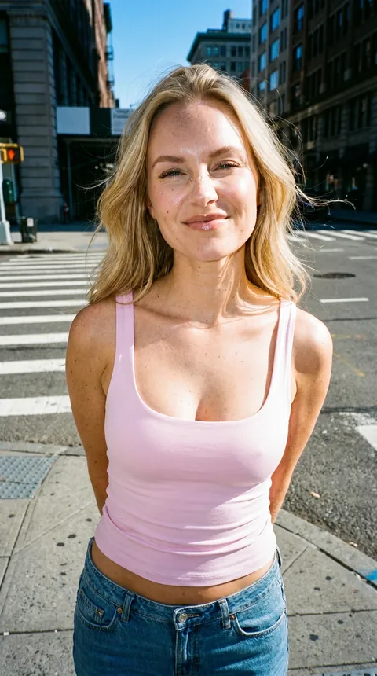
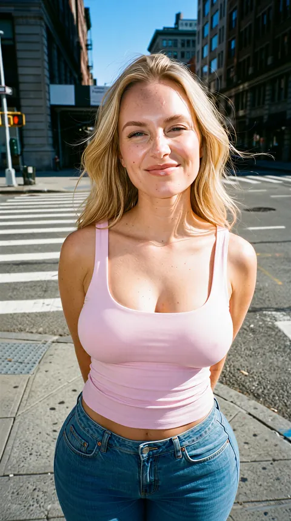
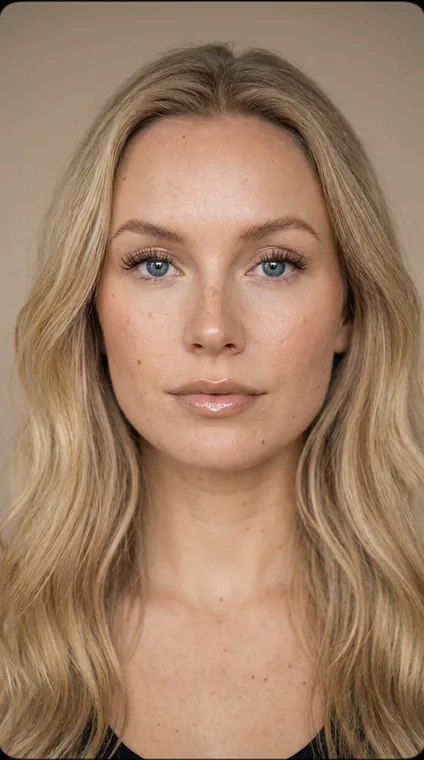

One weekend, one character built from nothing: reference generation, photoreal editing, identity-preserving and automation-friendly (via ComfyUI APIs + LLM/agentic prompting) face restoration across edits, and video for producing this demo. A working pipeline and the artifacts it produced, attached.
Context for how to read everything below. None of it changes the engineering; it changes what you should and should not expect from a 3-day unpaid build.
Multi-model, multi-stage, with a deliberate identity-preservation step in the middle. The hard part is keeping the same person after every edit pass, and although it never will be pixel perfect, it can be good enough.
Nano Banana Pro (2K, 9:16) on Higgsfield, identity locked to a canonical hero + ground-truth face/body set.
Qwen Rapid AIO v23, text-driven editing tuned for photorealism: skin texture, framing, scene.
SAM3 in ComfyUI segments the head, 1:1 square crop, geometry written to JSON.
Crop re-rendered at higher resolution against the original face reference.
Edited face downscaled into the recorded region (shrinking kills blur), seam feathered. Identity restored.
SeedVR2 image upscale back to 2K resolution for the final deliverable.


Click the thumbnails to swap the pair. Same character, held constant across the full edit chain.
Primitive, but it works! I treat identity as a reproducible post-process: segment, crop, restore at high res against the locked reference, then paste back by recorded geometry. stdlib-only Python drives ComfyUI over its HTTP API.
# settings.py - one place for every option, CLI flags override SAM_PROMPT = "female head" # SAM3 segmentation target FORCE_SQUARE = True # 1:1 crop, best for upscalers FEATHER = 24 # seam blend width (px) FACE_SUFFIX = "_face" # filename is the join key between stages # stage 1: photo -> output/<key>/<key>_face.png + _coords.json # (edit / skin / SeedVR2 upscale happen on the crop here) # stage 2: edited face -> downscale into recorded region -> feather -> final/ $ python3 batch_face_crop.py # 32 images, sequential, unattended $ python3 batch_paste_back.py # key = filename minus _face
Why downscale the edited face instead of upscale the target: shrinking a high-res render into the slot adds detail and preserves identity (skin, eye color, etc.). That is the reason behind it. Screenshots below.
No matter what style the input images are in, we can transfer their pose onto our character, keeping her own body shape and clothes. Input pose → our character (raw) → final. Examples below.
Every image below is the same person: generated, edited, face-restored, upscaled. Click to enlarge.
Character-consistent clips from the same identity: lifestyle, a lip-synced goodnight shot, motion/pose transfer from a reference, and template-driven scenes. Vertical, short-form, the format these products ship in.
In a production setting you most probably have viral templates already collected, with attention-grabbing hooks, and an AI agent collecting and expanding that collection over time so your characters can reuse them. I did not have time to collect and add templates here, and I did not want to reuse another brand's featured templates.
Reference inputs used for this session:
I did not have time to add face restoration for the character on these clips. Even so, judging by the result, staying with Seedance 2 yields much better output than motion/pose transfer with Kling or similar models, so anything that drives this would be Seedance 2 cost rather than a separate motion-transfer stack.
I quickly vibe-coded Higgie, a browser extension for Higgsfield that queues tens of prompts with their relevant reference images and runs them unattended, so this whole project cost nothing in image generation.
A browser extension I vibe-coded to keep a Higgsfield unlimited-mode queue full automatically: load a prompt list + reference images, set a count, walk away. Hundreds of prepared prompts generated without a human clicking.
Bulk generation ran on an owned Higgsfield unlimited plan instead of a metered image API. Editing, skin detail, SAM3 segmentation, inpaint and SeedVR2 upscale ran on a local ComfyUI GPU. The expensive, repeated step is the one I moved off per-call billing. Same call you make choosing local GPUs vs an aggregator by volume.
Not "good prompts." A fixed appearance lock + a reusable realism/imperfection stack appended to every generation + a hero-reference-first method, organized into a per-content-pillar prompt library.

Ground-truth reference set, although I mostly used front face + body shape + an optional character sheet to lock the face, body, and clothes.
The build shows speed and judgement. These show I have already done this at the scale you are scaling toward.
>99% identity & style consistency at production scale. Trained hundreds of LoRAs. ComfyUI editing/identity pipelines cut asset turnaround from days to hours. Extended image to video.
GCP infra training & serving LoRAs across a multi-thousand-SKU catalog. POC in 2 weeks, MVP in 8. Led 5 engineers. Autonomous ad-asset generation replacing manual design at scale.
Directed an international AI-influencer program: ~1,000+ image & video assets per month across multiple personas at production quality. SDXL + LoRA + ControlNet pipelines.
Consumer face-generation app: Replicate serving stack, tens of thousands of generations/day at 99.9% uptime. Cut pipeline time 25%+. Flux/SDXL identity, try-on, lip-sync.
If you move fast, so do I. The work is above.